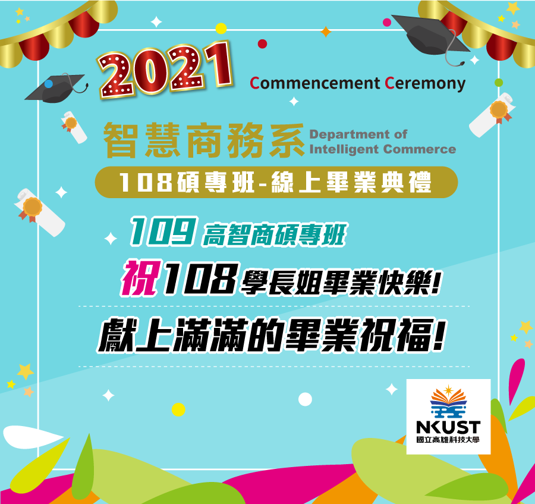
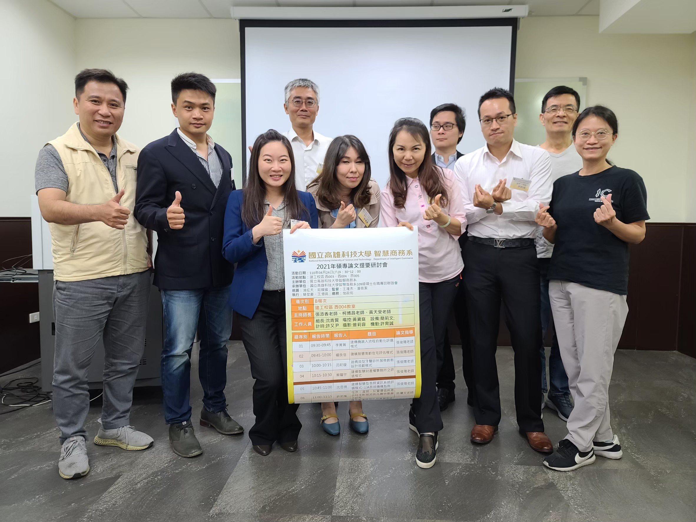
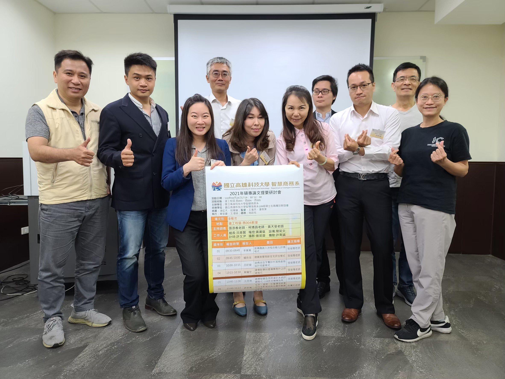

系主任致詞
108畢業快樂! 108碩專的同學們
我是你們109學年度畢業時的系主任張添香，先跟大家恭喜:畢業快樂!
本系於民國90年開始招收第一屆學生，到今年七月結束，即將邁入21年。恭喜日間部碩士班與進推部碩專班畢業同學，
你們是三校整併後，我們更名為智慧商務系，首屆入學且完成畢業的第一批學生。恭喜日間部大學部畢業班同學，你們是在本系還處於國立高雄應用科技大學資管系時期入學，在本系更名後的第二屆畢業生。你們是在畢業證書上，可以選擇印出原高雄應用科技大學，也可以選擇印出原資訊管理系的畢業生，你們經歷過資訊管理系時期的完整訓練，也有幸可以選修更名為智慧商務系後的人工智慧系列特色課程。今年五月剛好台灣碰到新冠肺炎疫情嚴峻，因為防疫政策，這是本系第一次以網頁專區的方式辦理畢業典禮，雖然形式不同，但系上偕同日間部系學會與碩專聯誼會的幫忙，希望能夠呈現出最符合你們期待的畢業典禮，陪伴同學留下最感動的篇章。相信，在這一個畢業專區的點滴，各位會感受到智慧商務系這個大家庭，對大家的溫暖、重視和祝福!
本系因為看到智慧科技的興起，以及傳統資管領域的限制，在併校後力求更名突破。因為是全國首創，在轉型的過程中，師生都需要付出很多的努力，才能被社會肯定。感謝各位願意跟系上一起努力，在今年本系大學畢業生的專題作品上，我們逐漸看到了許多應用智慧科技的亮點，也因此有組別申請到科技部大專生計畫的榮譽。同樣的，在今年本系畢業的日間部碩士班同學論文題目上，我們看到許多同學參與師長產學合作或科技部計畫，利用智慧科技協助處理醫療問題、金融問題與商務應用問題的研究成果；在今年本系畢業的碩專班同學論文題目上，很多同學也著手加入智慧科技的觀點協助解決工作和生活上的問題。
我們相信，各位帶著這一身的技藝投入職場，比起傳統資訊相關科系訓練出來的學生，會有更多且更優質的工作機會。
我們系上有很多我們獨特的活動和傳統，像碩專班聯誼會舉辦的迎新送舊與論文題要研討會，不僅讓校內上下屆的情感和專業交流更緊密，更讓同學和已畢業校友串接，擴展工作和生活上可能的資源。在日間部的碩士班，師長們盡力給予同學與理論與實務結合訓練的課程與機會，提供優質的業界與系友講座，讓同學畢業就有實戰力。像日間部四技的同學，我們給予同學四年固定導師的制度，讓同學遭遇問題時有最信任且立即直接的協助；程式類課程的會考，讓大家挑燈夜戰的在電腦教室共同練題庫，產生了革命情感；還有課後輔導的趕場，專題發表的壓力和成長，另外，系上學姊長與學弟妹串連的家族制度，系學會期中期末辦的all pass禮，全系同學大顯身手的年度大活動資管之夜，秋天的系烤，冬天的全系包水餃活動等等，這一切發生在校園中的點滴，串出了屬於各位記憶中燕巢校區和建工校區的春夏秋冬。
現在，各位已經完成了階段性的任務，帶著師長的祝福，即將展開人生另一場精采的旅程。
未來的路上，不可能永遠順利，可能會遇到困難和挫折，這裡送給各位同學三個錦囊妙計，
第一是正向思考，樂觀面對，自然會產生正向循環。
第二是保持謙卑學習的心境，真誠善良待人。
第三是維持健康強健的體魄，才能面對各種挑戰。
當然，也歡迎各位同學常跟師長聯繫，有空回來跟師長們聊天分享點滴，我們是你們永遠的靠山和支持的力量。
一日高智商人，終生高智商人，系上師長，真的很愛你們!最後，再次恭喜各位升格為智商系的系友，
祝福各位，鵬程萬里，創造出屬於自己的精彩人生!我有信心，未來我一定會以各位為榮!
再次祝福各位，畢業快樂，珍重再見!
致詞&祝福影片
108畢業代表致詞
暫時先放高科大相關YOUTUBE影片-致詞內容致詞內容致詞內容致詞內容
在校生代表致詞
暫時先放高科大相關YOUTUBE影片-致詞內容致詞內容致詞內容致詞內容
2021智商系友會會長蘇正文
2021智商系友會會長蘇正文的致詞
109碩專聯誼會會長致詞
暫時先放高科大相關YOUTUBE影片-致詞內容致詞內容致詞內容致詞內容
畢業生
《108畢業生名單》
J108256101 王小明
J108256101 王小明
J108256101 王小明
J108256101 王小明
J108256101 王小明
J108256101 王小明
J108256101 王小明
J108256101 王小明
J108256101 王小明
J108256101 王小明
J108256101 王小明
J108256101 王小明
J108256101 王小明
J108256101 王小明
J108256101 王小明
J108256101 王小明
J108256101 王小明
J108256101 王小明
J108256101 王小明
J108256101 王小明
給108學長姐的話
J109256134 蔡○君:
給親愛的學長姐~
一起共同上過一些課程~很開心認識大家，還記得人工智慧課聖誕節交換禮物還有吃PIZZA~很開心好好玩，謝謝學長姐的用心安排活動~
現在是主角的你們畢業了~要說聲謝謝學長姐~畢業快樂! 雖然現在疫情期間~還是要送上畢業的祝福~^^
J108256122高○凱：
給親愛的學長姊~
感謝你們在我們剛進來的時候，給予很多校園生活上的幫助，特別感謝二年級的菁菁、珩宇學姊，良信學長以及幹部群中的每一位。
另外，中秋烤肉，聖誕交換禮物等等都帶給我們很多的歡笑。
希望畢業後大家都能夠身體健康，事業起飛。愛你們：）
J109256114蘇○青:
親愛的學長姐
相聚即是有緣~學弟祝福你們
畢業時節，相逢又告別，歸帆又離岸，既是往日歡樂的終結，又是未來幸福的開端。生活如一條長河，願你是一葉執著的小舟；生活如一葉小舟，願你是一名風雨無阻的水手。祝你前程似錦，幸福如意！
J109256126 曾○容:
Dear 學長姐們：
時間過的飛快，還記得剛入學時，學長姐們用心舉辦的迎新餐會，以及在課程與各項活動的協助，讓在職多年後再進入校園的我們，能快速進入狀況。這一年多來疫情限制了我們許多活動，但限制不了我們的祝福，相信學長姐們亦是對未來有所期許才選擇再回到校園，祝福你們皆能達成心中所想，畢業快樂～祝福你（妳）們。
J109256130鄭○欣
親愛的學長學姊～
雖然相處的時間不長，您們即將要畢業了，因疫情讓我們無法共同參與畢業典禮，仍衷心祝福學長姐們鵬程萬里，朝著自己的目標邁進，並更上一層樓！往後的日子皆能平安喜樂☺️～畢業快樂！
J109256132 涂○傑:
高智商的學長姊們：
轉眼間，學長姊邁入了畢業的尾聲，還很深刻的記得，對於剛入學的我們，協助熟悉校園的事務，以及舉辦各式各樣的活動，建立非常好的榜樣讓我們學習。此刻學長姊們即將畢業，也祝福學長姊們畢業快樂，夢想到手！。
J109256135 許○尹:
親愛的學長學姐們：
衷心祝您們在工作中事業有成，在生活中夢想成真!畢業快樂～🎉
J109256111 潘○潔:
親愛的學長姐～
這一年感謝有您們，從迎新、舉辦各項活動或學業上的指導，都能感受到您們用心，感謝您們照顧我們。在此誠心的恭喜您們畢業，祝福您們事業順心，平安健康。
J109256137 林○萱 :
高智商的學長姐們：
感謝第一年的提攜，學長姐們就要迎接畢業了，願你們是航船，在知識的海洋中乘風破浪；願你們是雄鷹，在廣闊的天空中翱翔！
J109256129 黃○筠 :
Dear學長姐們～
記得剛入學第一天您們為我們舉辦的迎新餐會，讓許久沒踏進校園生活的我們很快熟悉校園事物，並融入班上歡樂的氣氛中～
之後ㄧ起上過的課、ㄧ起参加的活動也都是回憶滿滿，很開心有您們。
祝福學長姐們ㄧ切順心、事業順利，恭喜畢業畢業囉！
J109256112 強尼:
致親愛的學長姐們
記得唯一有共同修課是在第一學期的人工智慧課程，
印象中的學長姐們熱情辨活動、課堂專業報告、成熟穩重談吐..已是社會的菁英風範，
相信畢業只是一個形式，過程才是美好回憶，爾後情誼永在，
在此深深祝福順心、成功、健康、平安，恭喜畢業囉~
J109256125 蔡○翰 :
致親愛的學長姐們
時間飛逝，轉眼間學長姐們已經要畢業了，相處的時間不多
但學長姐們很用心的辦理相關聚會活動，也提供相關的協助
讓懵懵懂懂的學弟能順利的融入學校生活，這美好的回憶
永存在心中，祝福學長姐們未來鵬程萬里，平安順遂。
J109256133 陳○妏 :
親愛的學長姐們～
猶記得甫見面是在餐會，轉眼間即將畢業，感謝學長姐們在學業及經驗上的分享，不僅給予我們建議，也灌溉了我們成長的養分，期盼像學長姐們一樣優秀及擁有菁英般的典範，祝福學長姐們平安、健康，恭喜畢業了！
J109256120 黃○瑩 :
おめでとうございます 🎊
Great job 🌟٩(๑>ω<๑)۶🌟
BRAVO╰(* ´︶` *)╯
又見六月鳳凰花🌹開季
捎來美好的祝福祝福
給自信美麗+卓越非凡的「高智商」學長學姊們
雖然相處時間不長，感謝🙏這一年的照顧
祝福學長學姊們未來一帆風順！畢業快樂！
J109256136 李○頴 :
高智商的學長姐您們好：
謝謝您們在學期間總是不嫌麻煩的舉辦各項聯誼活動，建立系上良好互動的傳統文化與彼此之間關係，創造留存人人擁有美好深刻的印象記憶。
祝福各位學長姐們於各行各業領域，衝鋒陷陣的開創不凡的道路與奇蹟，未來帶領團隊走向充滿盼望的世界。


 
